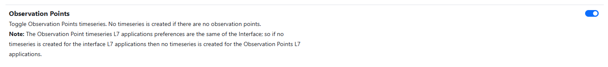
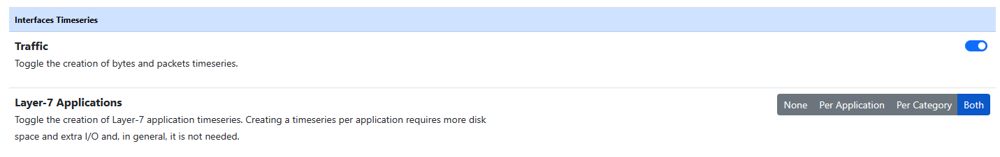

Using ntopng with nProbe
ntopng can be used to visualize traffic data that has been generated or collected by nProbe.
Note
ntopng Enterprise L Bundle already includes a nProbe Pro license, there is no need to buy a nProbe license if a ntopng Enterprise L Bundle license is installed.
Using ntopng with nProbe is convenient in several scenarios, including:
The visualization of NetFlow/sFlow data originated by routers, switches, and network devices in general. In this scenario, nProbe collects and parse NetFlow/sFlow traffic from the devices, and send the resulting flows to ntopng for the visualization.
The monitoring of physical network interfaces that are attached to remote systems. In this scenario, ntopng cannot directly monitor network interfaces nor it can see their packets. One or multiple nProbe can be used to capture remote network interfaces traffic and send the resulting flows towards a central ntopng for the analysis and visualization.
The following picture summarizes the two scenarios highlighted above and demonstrates that they can also be combined together.

Using nProbe with ntopng
In the picture above, arrows from nProbe to ntopng represent the logical direction of exported flows. In practice:
The actual connection can either be initiated by ntopng or nProbe as discussed in Using Behind a Firewall.
nProbe export flows in TLV format, or optionally as standard JSON, over ZMQ (http://zeromq.org/). The benefits of this are described in detail in the following blog post https://www.ntop.org/nprobe/why-nprobejsonzmq-instead-of-native-sflownetflow-support-in-ntopng/.
Following is a minimum, working, configuration example of nProbe and ntopng to obtain what has been sketched in the picture above. The example assumes both ntopng and nProbe are running on the same (local) host. In case they run on separate machines, the IP address 127.0.0.1 has to be changed with the address of the machine hosting nProbe.
ntopng Configuration
ntopng -i tcp://127.0.0.1:5556
nProbe Configuration
nprobe --zmq "tcp://*:5556" -i eth1 -n none -T "@NTOPNG@" # raw packets
nprobe --zmq "tcp://*:5556" -i none -n none --collector-port 2055 -T "@NTOPNG@" # NetFlow/sFlow over UDP on port 2055
Option -T "@NTOPNG@", known as template, tells nprobe the minimum set of fields it has to export in order to ensure interoperability with ntopng. Specifying this option is recommended when using nProbe with ntopng. Other collectors may require different sets of fields in order to work. Templates and exported fields are discussed below.
For more information about configuring nProbe for ntopng check out https://www.ntop.org/nprobe/best-practices-for-the-collection-of-flows-with-ntopng-and-nprobe.
Exported Flow Fields
One of the benefits of exporting flows in TLV or JSON is that they have no fixed format. As a consequence, the set of fields exported from nProbe to ntopng is variable and configurable using an nProbe template. In order to ensure interoperability with ntopng, this template, defined with nprobe option -T, should contain the following minimum set of fields:
%IN_SRC_MAC %OUT_DST_MAC %SRC_VLAN %IPV4_SRC_ADDR %IPV4_DST_ADDR %L4_SRC_PORT %L4_DST_PORT %IPV6_SRC_ADDR %IPV6_DST_ADDR %IP_PROTOCOL_VERSION %PROTOCOL %L7_PROTO %IN_BYTES %IN_PKTS %OUT_BYTES %OUT_PKTS %FIRST_SWITCHED %LAST_SWITCHED %FLOW_TO_APPLICATION_ID %FLOW_TO_USER_ID %INITIATOR_GW_IP_ADDR %EXPORTER_IPV4_ADDRESS
Rather that specifying all the fields above one by one, an handy macro @NTOPNG@ can be used as an alias for all the fields. nProbe will automatically expand such macro during startup. Hence, the following two configurations are equivalent:
nprobe --zmq "tcp://*:5556" -i eth1 -n none -T "@NTOPNG@"
nprobe --zmq "tcp://*:5556" -i eth1 -n none -T "%IN_SRC_MAC %OUT_DST_MAC %SRC_VLAN %IPV4_SRC_ADDR %IPV4_DST_ADDR %L4_SRC_PORT %L4_DST_PORT %IPV6_SRC_ADDR %IPV6_DST_ADDR %IP_PROTOCOL_VERSION %PROTOCOL %L7_PROTO %IN_BYTES %IN_PKTS %OUT_BYTES %OUT_PKTS %FIRST_SWITCHED %LAST_SWITCHED"
Additional fields can be combined with the macro @NTOPNG@ to specify extra fields that will be added to the minimum set. For example:
nprobe --zmq "tcp://*:5556" -i eth1 -n none -T "@NTOPNG@ %FLOW_TO_APPLICATION_ID %FLOW_TO_USER_ID %INITIATOR_GW_IP_ADDR %EXPORTER_IPV4_ADDRESS"
High-Resolution Timeseries
Adding %HR_SRC_TO_DST_BYTES and %HR_DST_TO_SRC_BYTES to the template enables
15-second per-flow byte counters. ntopng automatically detects these fields and stores them
in the ClickHouse flows table for use in high-resolution throughput charts:
nprobe -i eth1 -n none --zmq "tcp://*:5556" \
-T "@NTOPNG@ %HR_DST_TO_SRC_BYTES %HR_SRC_TO_DST_BYTES"
No ntopng configuration change is required — detection and storage are automatic when ClickHouse is configured as the flow dump backend. See Observability for full details.
Collecting from Multiple Exporters
There are two main ways to gather flows from multiple NetFlow/sFlow exporters and visualize data into ntopng:
By running a single nProbe instance, and directing all the exporters to the same nProbe port. This is the simpler option since adding a new probe does not require any modification of the nProbe/ntopng configurations. It is also possible to enable Dynamic Interfaces Disaggregation by Probe IP to separate the exporters flows.
By running multiple nProbe instances, one for each exporter. This method is the most performant because each exported data will be handled by a separate thread into ntopng so it can leverage the CPU cores of a multicore system.
Here is an example on how to configure multiple nProbe instances (second approach):
ntopng -i "tcp://127.0.0.1:5556" -i "tcp://127.0.0.1:5557"
nprobe --zmq "tcp://*:5556" -i none -n none --collector-port 2055
nprobe --zmq "tcp://*:5557" -i none -n none --collector-port 6343
In this examples two NetFlows exporters export flows to ports 2055 and 6343 respectively. nProbe uses two separate ZMQ channels to communicate with ntopng. The two exporters flows will be split into two separate virtual network interfaces into ntopng:
tcp://127.0.0.1:5556: flows from exporter on port 2055
tcp://127.0.0.1:5557: flows from exporter on port 6343
Observation Points
ntopng 5.0 and later, and nProbe 9.6 and later, include support for Observation Points. An Observation Point is defined in IPFIX as a location in the Network where packets can be observed. This is useful when collecting flows on large networks from hundred of routers, as ntopng allows you to create a limited number of collection interfaces (up to 32 virtual at the moment), to avoid merging collected flows from all routers.

Each nProbe instance can be configured to set a numerical value for the Observation Point ID that uniquely identifies a site. Depending on the site size, a site can have one or multiple probes.
The Observation Point can be configured in nProbe using the -E option as in the below example.
Site A (1 nProbe intance):
nprobe -i eth1 -E 0:1234 --zmq tcp://192.168.1.1:5556 --zmq-probe-mode
Site B (2 nProbe instances):
nprobe -i eth1 -E 0:1235 --zmq tcp://192.168.1.1:5556 --zmq-probe-mode
nprobe -i eth2 -E 0:1235 --zmq tcp://192.168.1.1:5556 --zmq-probe-mode
Central ntopng (Flow Collector):
ntopng -i tcp://92.168.1.100:5556c
In this configuration, flows sent by nProbe to ntopng are marked with the Observation Point ID, which is reported by ntopng in the web interface.
All the Observation Point IDs seen by ntopng are listed in the dropdown menu at the top of the page. By selecting an Observation Point it is possible to visualise only flows matching that Observation Point.

On the Probes menu from the sidebar, it is possible to list all the Observation Point IDs seen by ntopng, set a custom name by clicking on the wheel icon, and visualize traffic statistics by clicking on the chart icon.

Please pay attention that, while flows are selected by the Observation Point when using the dropdown menu, traffic reported for hosts, ASs, networks etc is merged at the interface level regardless of the that. This allows statistics not to be duplicated when hosts from different Observation Points talk together.
Observation Points Charts
In the Observation Points Page, 5 columns are shown: the Observation Points column, showing the Observation Point number and Alias (e.g. Paris); the Chart column, necessary to show the Observation Points graphs; the Current Hosts column that shows up the current number of hosts of the Observation Point; the Current Throughput that represents the current throughput of the Observation Point; the Total Traffic column, showing the total traffic done by an Observation Point (Bytes sent + receved).
To be able to see Observation Points charts it’s necessary to enable the corresponding timeseries settings. To do so go to Settings, Timeseries and scroll down; then enable the Flow Probes timeseries.

Other then the base timeseries (like Traffic, Score, ecc.) it is possible to have Applications timeseries. To have them it’s needed to activate the Interfaces Application Timeseries (turn the Interface L-7 Application on ‘Per Application’ or on ‘Both’).

After that, all the Observation Points timeseries are going to be available (Traffic, Score and Applications timeseries); go to the Observation Points page and click the charts icon to see them.

Note
The maximum number of Observation Points is 256 and the timeseries data are going to be updated every 5 minutes. If ntopng is restarted, like other timeseries, these data (during the restart period) are going to be put at 0, after that everything is going to be working like usual.
Using Behind a Firewall
In the remainder of this section it is shown how to connect nProbe and ntopng in presence of a NAT or firewalls. Indeed, the examples given above might not have worked well in case there was a firewall or a NAT between nProbe and ntopng. Following it is shown an exhaustive list of all the possible scenarios that may involve firewalls or NATs, and the configuration that has to be used to always ensure connectivity between nProbe and ntopng.
nProbe and ntopng on the same private network (firewall protected)
In this scenario, the firewall does not create any trouble to ZMQ communications and the normal configurations described above can be used.
nProbe on a public network/IP, ntopng on a private network/IP protected by a firewall
In this case the ZMQ paradigm works well as ntopng connects to nProbe and the normal configurations highlighted above can be used.
nProbe on a private network/IP, ntopng on a public network/IP protected by a firewall
In this case the ZMQ paradigm does not work as the firewall prevents ntopng (connection initiator) to connect to nProbe. In this case it is necessary to revert the ZMQ paradigm by swapping the roles of nProbe and ntopng. Suppose nProbe runs on host 192.168.1.100 and ntopng on host 46.101.x.y. In this scenario it is necessary to start the applications as follows
nprobe --zmq-probe-mode --zmq "tcp://46.101.x.y:5556" -i eth1 -n none
ntopng -i "tcp://*:5556c"
Note the two options:
--zmq-probe-modetells nProbe to initiate a connection to46.101.x.y-i "tcp://*:5556c"tells ntopng to act as a collector (notice the smallc) and to listen for incoming connections.
In essence the roles of nProbe and ntopng have been reverted so they behave as NetFlow/IPFIX probes do. Only the roles have been reverted. Everything else will continue to work normally and the flows will still go from nProbe to ntopng.
Collector Passthrough
nProbe can be configured with option --collector-passthrough to collect NetFlow/sFlow and immediately send it verbatim to ntopng. This may be beneficial for performances in high-speed environments. See https://www.ntop.org/guides/nprobe/case_study/flow_collection.html for a full discussion.
Data Encryption
ntopng and nProbe support data encryption over ZMQ. This is based on the native CURVE encryption support in ZMQ, and it is available with ZMQ >= 4.1.
Encryption is now enabled by default: ntopng no longer accepts cleartext ZMQ traffic by default. If encryption is not explicitly configured by the user, ntopng (and nProbe) fall back to a public builtin default key pair. This default key only prevents accidental cleartext exposure and should be replaced by properly configuring a dedicated key pair.
In order to configure a dedicated key pair, the --zmq-encryption option should be added to the configuration file. A private/public key pair is automatically generated by ntopng and the public key is displayed in the interface status page. Alternatively a specific private key can be supplied with --zmq-encryption-key-priv <key>.

Encryption Public Key
The public key should be configured in nProbe (the same applies to cento and n2disk when used as probes for ntopng) by using the --zmq-encryption-key '<pub key>' option.
Example:
Suppose you want to run nprobe and ntopng on the same host and send flows on ZMQ port 1234
Start ntopng as follows:
ntopng -i tcp://127.0.0.1:1234 --zmq-encryptionConnect to the ntopng web GUI, select the ZMQ interface as in the above picture and copy the value of –zmq-encryption-key ‘…’
Start nprobe as follows:
nprobe --zmq-encryption-key '<pub key>' --zmq tcp://127.0.0.1:1234
Note: unless a private key is provided, ntopng generates a public/private keypair and stores it under /var/lib/ntopng/key.{pub,priv}
If encryption is not desired at all (e.g. on a fully trusted network, or in old deployments with nProbe instances exporting cleartext ZMQ), it can be turned off with --zmq-disable-encryption.
Tuning
ZMQ uses TCP buffers for communication between nProbe and ntopng. Proper tuning of these buffers is essential for optimal performance in high-traffic environments with an high flow rate.
ntopng sets the ZMQ receive buffer via ZMQ_RCVBUF and uses 8388608 (8 MB) as the default value. However, the actual buffer size may be limited by the system-wide maximum receive buffer size.
To check the current system-wide limit, run:
cat /proc/sys/net/core/rmem_max
If the output shows a value lower than 8388608 (e.g., 212992), you should increase it to avoid performance bottlenecks and potential flow loss.
To temporarily increase the receive buffer size, use:
sudo sysctl -w net.core.rmem_default=16777216
This change will be lost after a system reboot.
To make the change permanent, add the following line to either /etc/sysctl.conf or /etc/sysctl.d/99-zmq.conf:
net.core.rmem_default=16777216
After editing the file, apply the changes with:
sudo sysctl -p
Quick Start
A sample configuration file for running ntopng as ZMQ collector for nProbe is installed on Unix systems under /etc/ntopng/ntopng.conf.nprobe.sample. As described in the Running ntopng as a Daemon section, the configuration file has to be named ntopng.conf and must be placed under /etc/ntopng/ when running ntopng as a daemon on Unix systems with init.d or systemd support. In order to enable this configuration, you should replace the configuration file with the sample configuration and restart the service:
cp /etc/ntopng/ntopng.conf.nprobe.sample /etc/ntopng/ntopng.conf
systemctl restart ntopng
Please note that the sample configuration assumes that both ntopng and nProbe are running on the same (local) host. In case they run on separate machines, the configuration file has to be changed with the address of the machine hosting nProbe.
Similarly, a sample configuration file for nProbe is also installed (by the nprobe package) on Unix systems under /etc/nprobe/nprobe.conf.ntopng.sample. In order to enable this configuration, also in this case, you should replace the configuration file with the sample configuration and restart the service:
cp /etc/nprobe/nprobe.conf.ntopng.sample /etc/nprobe/nprobe.conf
systemctl restart nprobe
Please note that the sample configuration for nProbe assumes that a NetFlow exporter is delivering
NetFlow to nProbe on port 6363. In this case nProbe acts as a proxy, collecting NetFlow and delivering
flows to ntopng over ZMQ. If you need to process live traffic on a physical interface, the interface
name should be set in place of -i=none and --collector-port=6363 should be commented out.